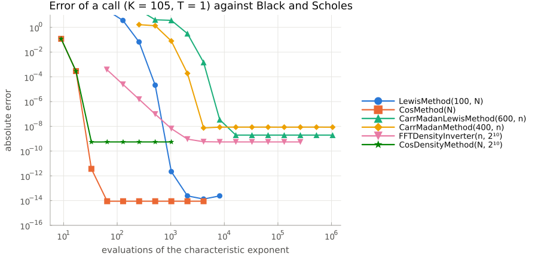
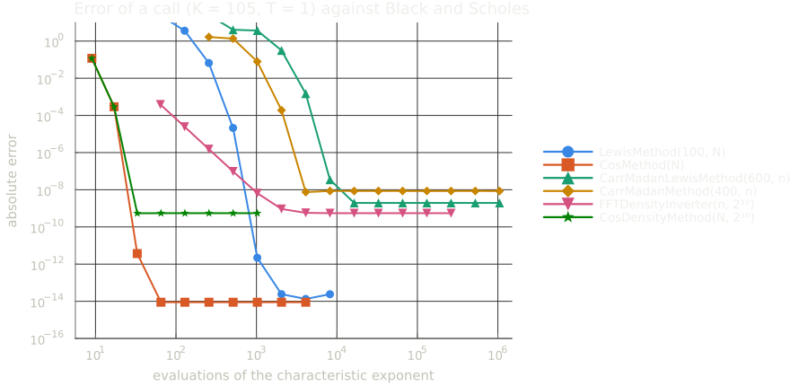
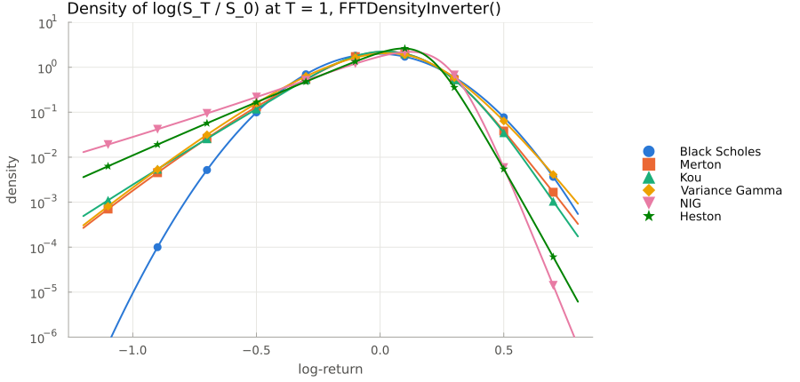
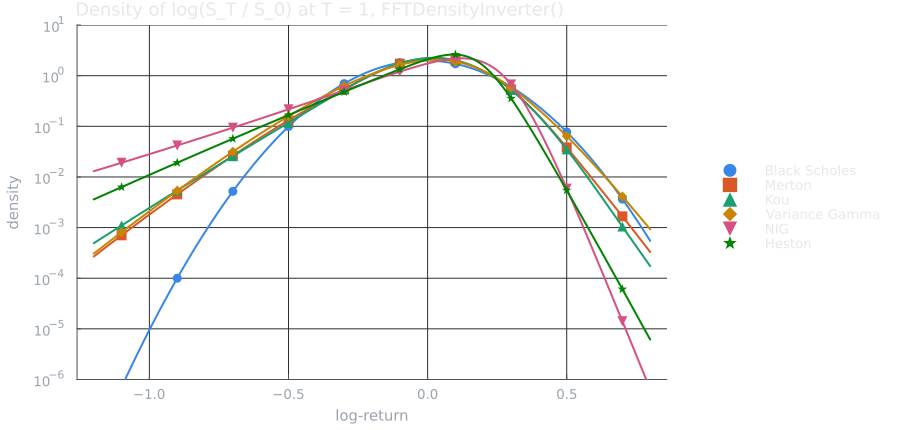
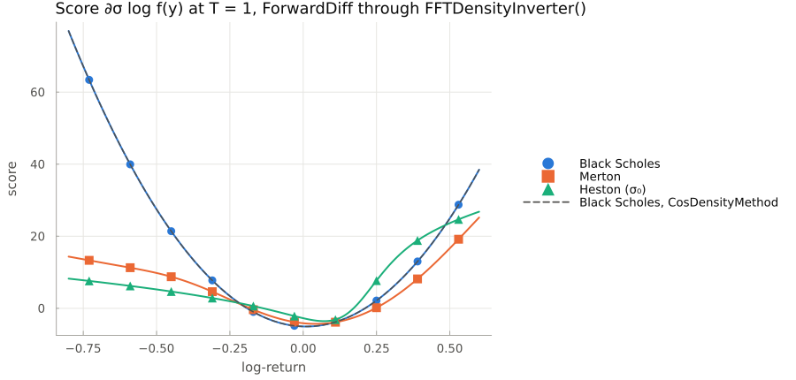
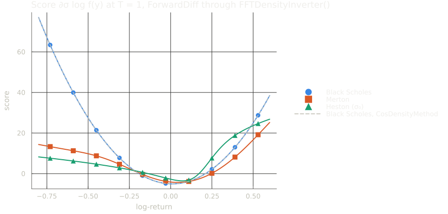

Methods
Every method is a configurator struct passed to pricer, in the place of the MonteCarloConfiguration of FinancialMonteCarlo.jl. All of them price every payoff and model of the package.
| Method | Constructor | How it works |
|---|---|---|
LewisMethod | LewisMethod(A, N) | Direct quadrature of the Lewis formula on N nodes in [-A, A] |
CosMethod | CosMethod(N) | Cosine expansion of the put with N terms, the truncation range is computed from the model |
CarrMadanLewisMethod | CarrMadanLewisMethod(A, Npow) | One FFT of the Lewis integrand on 2^Npow nodes, then Lagrange interpolation on six nodes at the strikes |
CarrMadanMethod | CarrMadanMethod(A, Npow, α = 0.75) | One FFT of the damped call transform on 2^Npow nodes, then Lagrange interpolation on six nodes at the strikes |
CosDensityMethod | CosDensityMethod(N = 128, M = 2^10) | Cosine expansion of the density with N terms, then Simpson's rule for the put on M intervals |
FFTDensityInverter | FFTDensityInverter(N = 14, M = 2^10) | FFT of the characteristic function on 2^N points for the density, then Simpson's rule for the put on M intervals |
All of them agree with the closed formula of Black and Scholes:
using FinancialFFT, FinancialMonteCarlo, FinancialToolbox
S0, K, r, d, T, σ = 100.0, 105.0, 0.02, 0.01, 1.1, 0.2
model = BlackScholesProcess(σ, Underlying(S0, d))
zero_rate = ZeroRate(r)
option = EuropeanOption(T, K)
exact = blsprice(S0, K, r, T, σ, d)
methods = [LewisMethod(600.0, 20000), CosMethod(2^12), CarrMadanLewisMethod(600.0, 16), CarrMadanMethod(400.0, 18), CosDensityMethod(), FFTDensityInverter()]
[nameof(typeof(method)) => abs(pricer(model, zero_rate, method, option) - exact) for method in methods]6-element Vector{Pair{Symbol, Float64}}:
:LewisMethod => 4.440892098500626e-15
:CosMethod => 2.7533531010703882e-14
:CarrMadanLewisMethod => 1.5504317829595493e-9
:CarrMadanMethod => 6.586247991435812e-9
:CosDensityMethod => 5.763203247965976e-10
:FFTDensityInverter => 5.764340116343192e-10The error depends on how many times a method evaluates the characteristic exponent, which is most of its cost. COS converges exponentially and reaches the rounding floor with a few dozen terms; Lewis does too, once its nodes cover the decay of the integrand; the Carr-Madan methods stop at the error of the interpolation on the strike grid, and the two density methods at the error of Simpson's rule on M intervals:


Choosing a method
LewisMethodandCosMethodare the most accurate, and withCosDensityMethodandFFTDensityInverterthe only ones whose Zygote gradients can be relied upon, see Automatic differentiation.CosMethodhas no range parameter: its range comes from the tails of the model and covers the forward of every strike. A smile shares one range, so all of its strikes reuse the same coefficients, at the price of a largerNwhen the strikes are many standard deviations apart. It expands the put and recovers the call by parity, so calls stay accurate on models with a heavy right tail. On the CPU the strikes of a smile share the phases of the characteristic function, and each strike sums the series with a Clenshaw recurrence, at the cost of onesincosinstead of onecosper term: in Black Scholes withN = 2^12, a smile of 100 strikes costs about 3.5 times a single option, rather than about 18. On the GPU the series stays one broadcast over terms and strikes.LewisMethodevaluates the characteristic function on the nodes in[0, A]only, since the integrand is even. It prices the strikes of a smile from one set of these evaluations: on the CPU each strike sums the quadrature with a Clenshaw recurrence (in Reinsch's form, which stays accurate at the money), at the cost of onesincosper strike instead of anexpand acosper node, about 6 times faster for smiles of 100-500 strikes withN = 20000.CarrMadanLewisMethodandCarrMadanMethodrun one FFT for all strikes, so their cost does not grow with the number of strikes; prices between the nodes of the strike grid come from Lagrange polynomials on six nodes, of orderh⁶in the steph = 2π / Aof the grid, which is what limits their accuracy. The interpolant is continuous but its derivatives in the strike jump at the nodes, by about 1e-8 forCarrMadanLewisMethod(600, 16).CarrMadanMethodneedsA / 2^Npowto be small with respect to the damping, which is capped by the exponential moments of the model. Both Carr-Madan methods can chooseAandNpowfrom a price tolerance, see below.CosDensityMethodandFFTDensityInverterprice with theirdensity, the cosine expansion and the FFT inversion: they need no range parameter, and the strikes of a smile share the density, so a smile costs one density and one Simpson's rule per strike. Their error is the one of Simpson's rule onMintervals (about1e-9with the defaultM = 2^10), and they are slower thanCosMethod, which integrates the payoff exactly against the cosine expansion: their purpose is to price with the densities that other estimators use.
model = MertonProcess(σ, 5.0, 0.03, 0.02, Underlying(S0, d))
pricer(model, zero_rate, FFTDensityInverter(), option) - pricer(model, zero_rate, LewisMethod(600.0, 20000), option)5.515481404927414e-10Carr-Madan parameters from a tolerance
CarrMadanMethod(model, zero_rate, payoff, ε) and CarrMadanLewisMethod(model, zero_rate, payoff, ε) return the method whose error on the prices of payoff, an option or a smile, is below ε. They bound the three errors of the FFT methods:
- Interpolation and truncation: the FFT samples the integral up to the frequency
Aon a strike grid of step2π / A, and the six-point Lagrange interpolation errs on a frequencyvby at mostL₆ (2π v / A)⁶. Weighting the modulus of the integrand with this error (with a cap, and with 1 beyondA) gives a bound decreasing inA, solved forA. - Aliasing: the result is periodic in the log-strike. Simpson's weights also add copies at half the period, which is the half-width
b = π 2^Npow / Aof the strike grid, sobmust reach the distance at which the damped price is belowε. It is a closed form on one side, and on the other, where the price can have a heavy tail, a Chernoff bound minimised as for the range ofCosMethod.
2^Npow is the smallest power of two with both, and the spare nodes go to A. The bounds are model-free apart from the characteristic function, and their error is typically a quarter to a half of ε:
model = BlackScholesProcess(σ, Underlying(S0, d))
smile = FinancialMonteCarlo.EuropeanOptionSmile(T, collect(50.0:5.0:200.0), fill(true, 31))
method = CarrMadanMethod(model, zero_rate, smile, 1e-8)
(method.A, method.Npow), maximum(abs.(pricer(model, zero_rate, method, smile) .- blsprice.(S0, smile.K, r, T, σ, d)))((828.3196192308429, 13), 2.718895331099702e-9)The parameters are constants for differentiation, so the method can be built inside a differentiated function.
Floating-point types
Prices have the floating-point type of the model, the rates and the payoff: the grids, the truncation ranges and the parameters of the method (A, α, given in Float64 in the examples) are converted to it, so Float32 inputs give Float32 prices and BigFloat inputs BigFloat prices. FFTW transforms Float32 and Float64 only: in other types the FFT methods use a radix-2 FFT of the package, slower but in their precision. The truncation range of the COS methods comes from a tail probability of 1e-14 in Float64, scaled by the machine epsilon in other types: in BigFloat the range is wider, so reaching its precision needs a larger N (and M for CosDensityMethod).
setprecision(BigFloat, 128) do
model = BlackScholesProcess(BigFloat(0.2), Underlying(BigFloat(100), BigFloat(0.01)))
pricer(model, ZeroRate(BigFloat(0.02)), CosMethod(2^10), EuropeanOption(BigFloat(1), BigFloat(100)))
endDensities
density returns the density of the log-return log(S_T / S_0), for estimators that need it without a closed formula, such as the likelihood ratio method or Vibrato. Like pricer, it dispatches on the method:
| Method | Density | Range | Cost |
|---|---|---|---|
FFTDensityInverter | one FFT on 2^N points, cubic interpolation between them | the range of CosMethod, from the model | an FFT to set up, about 30 ns a point |
CosDensityMethod | cosine expansion on N + 1 terms | the range of CosMethod, from the model | N exponents to set up, about 300 ns a point (N = 128) |
The setup runs once, then the density is evaluated at any number of points: f(y) at a point, on the CPU, and FinancialFFT.density_values(f, y) at an array of points, on the GPU too. It does not depend on S_0, so the density of log(S_T) given S_t is f(x - log(S_t)); outside its range [f.a, f.b] it is zero.
f = density(model, zero_rate, FFTDensityInverter(), T)
f(0.1), f.a, f.b(1.6533985976767447, -1.6952757596571486, 1.6730701595888313)

The density is generic in the number type of the model, so its scores, the weights of the likelihood ratio method, come from automatic differentiation of log(f(y)); the range is a constant for differentiation:
using ForwardDiff
merton(s) = MertonProcess(s, 5.0, 0.03, 0.02, Underlying(S0, d))
score(y) = ForwardDiff.derivative(s -> log(density(merton(s), zero_rate, FFTDensityInverter(), T)(y)), σ)
score(0.1)-3.591227230504311

FFTDensityInverteris the one to use for many evaluations, e.g. one per path of a simulation: its interpolation is a gather of four values. Its error is of orderdx⁴(about1e-13with the defaultN = 14in Black and Scholes), and the grid narrows with the horizon, so short steps keep their resolution. Every AD back-end differentiates it, Zygote included, on the CPU and on the GPU.CosDensityMethodconverges exponentially on smooth densities, and is the most accurate of the three there; it struggles where the density is not smooth, as Variance Gamma over a short step, whose density has a cusp at its mode (2% off with 512 terms, against6e-6forFFTDensityInverter(16)).
All errors are absolute: far in the tails, where the density is close to the floor of the machine epsilon, the relative error, which is the one of a score, grows.